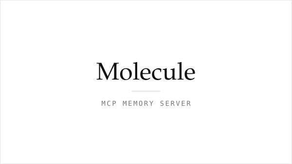

Molecule
Python · FastMCP · SQLite · Sentence-Transformers
A drop-in Model Context Protocol server that gives any agent persistent memory and selective access to large documentation. It splits long markdown into labelled chunks and serves only the relevant one, cutting context tokens by about 78%. A hybrid router combines embeddings, BM25 and heading matches and learns from agent feedback. Facts are extracted from transcripts without an LLM call, de-duplicated, checked for conflicts and expired on a time-to-live.